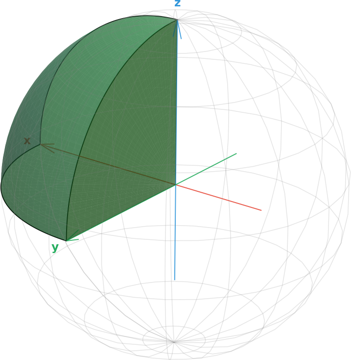
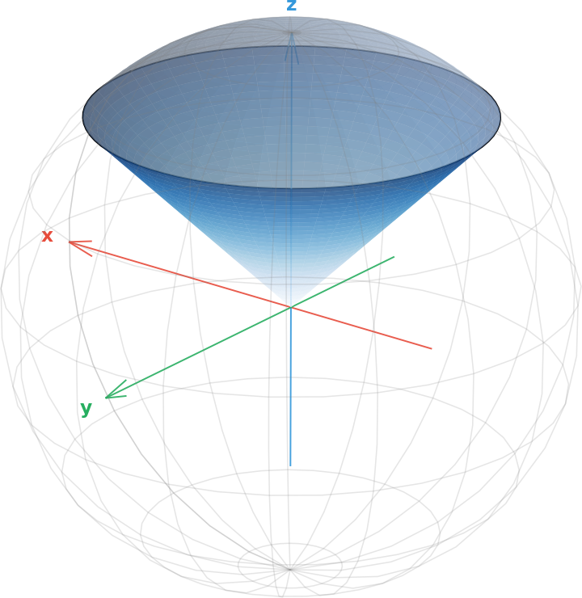
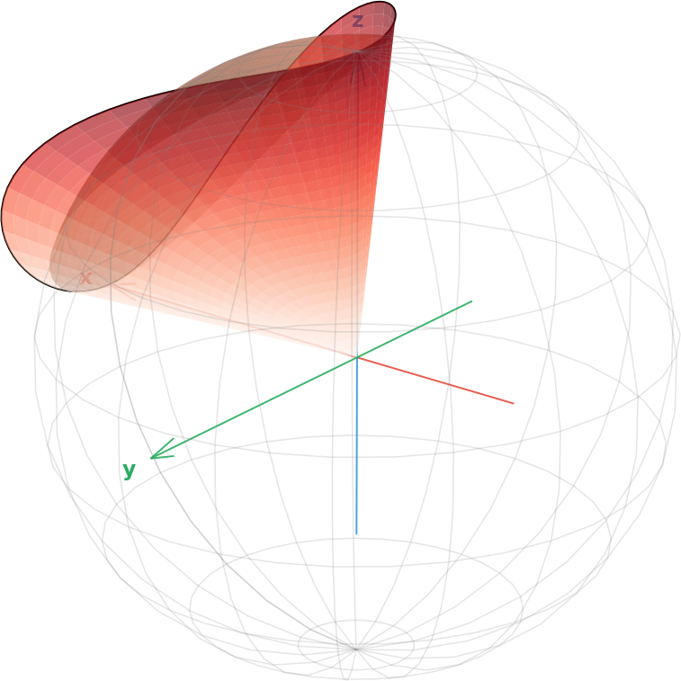
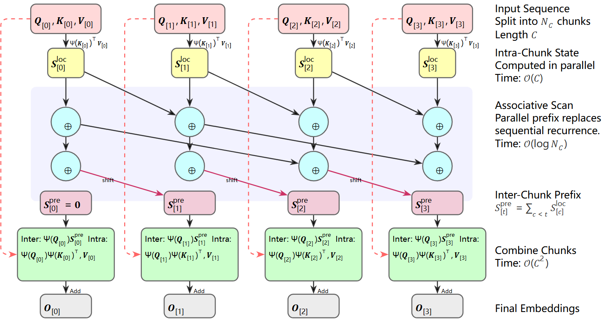
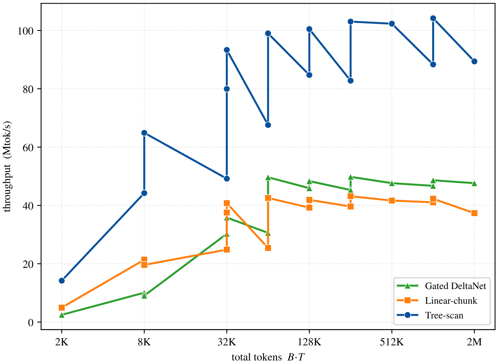
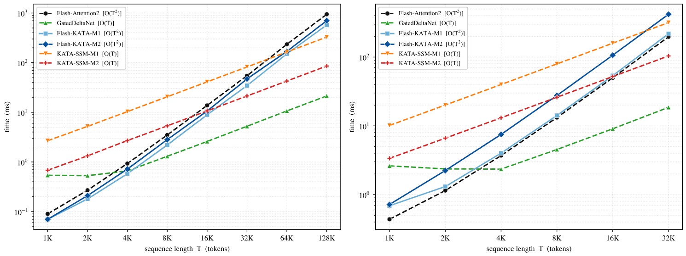

图↔注 核对预览（sphere-filling-linear-attention / KATA）
从左到右、从上到下即正文出现顺序。核对点：图内容与图注是否对应、图序是否与正文叙述顺序一致。
第 1 组图（章节：容量墙）· 对应正文「三类锥的差别也随之清晰」段之后



图1：ℝ³ 中三族常见的实对称锥。(a) 正象限；(b) 洛伦兹锥；(c) 半正定锥。
第 2 张图（章节：从几何到内核）· 对应正文「分块前向…」段之后

图2：分块关联扫描。每个块先并行算出本地状态，互斥前缀扫描给出跨块状态，再与块内因果模式合并成输出。
第 3 张图（章节：吞吐实测）· 对应正文「二次形式…吞吐」段之后

图3：不同批大小与序列长度网格下的前向吞吐，对比关联扫描、顺序扫描与 Gated DeltaNet。
第 4 张图（章节：吞吐实测）· 对应正文「131K 长度约 11 倍」段之后

图4：KATA-Mg 在 NVIDIA H100 上的延迟随序列长度变化，左为前向延迟，右为前向加反向。